and i'm going to tell you about Spider-Man Remastered.
Spider-Man Remastered is a video game a very,very fun video game and if you disagree
Mario will come and kill you.
CHARACTERS
Peter/Spider-Man
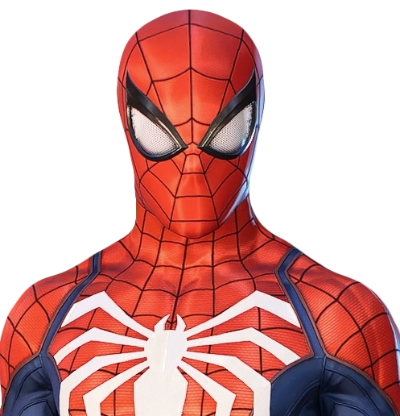
MJ
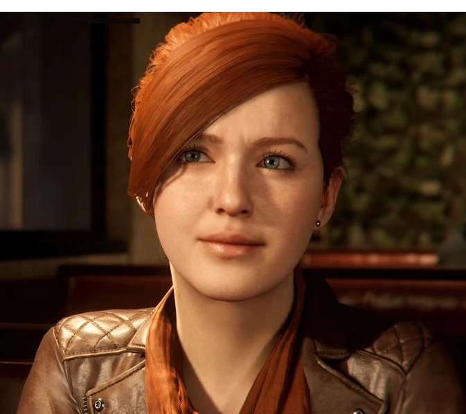
Aunt May
Yuri
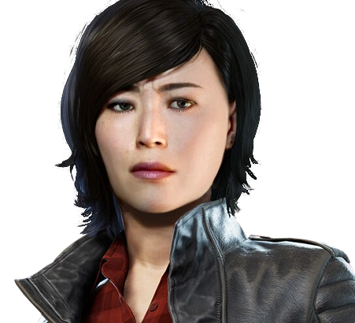
Kingpin
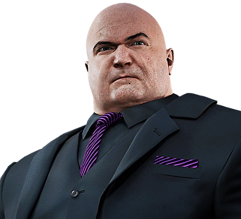
Miles
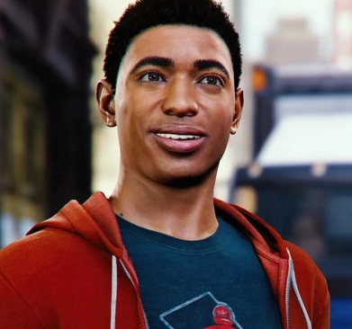
Shocker
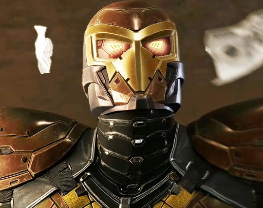
Silver Sable
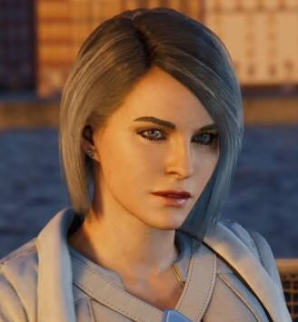
Marten Li/Mr.Negative
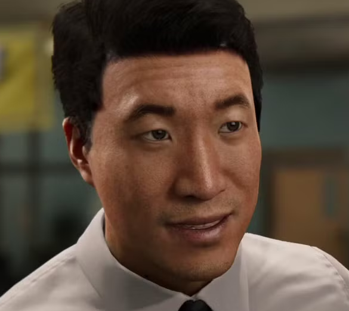
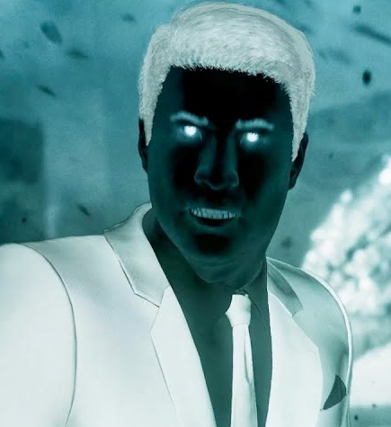
Tombstone
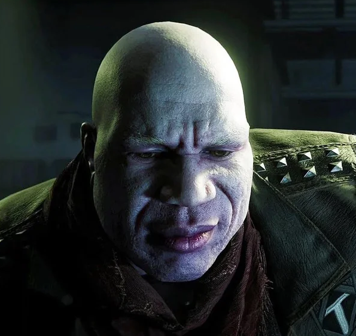
Electro
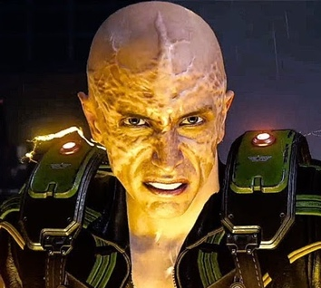
Vulture
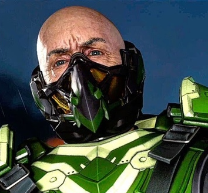
Scorpion
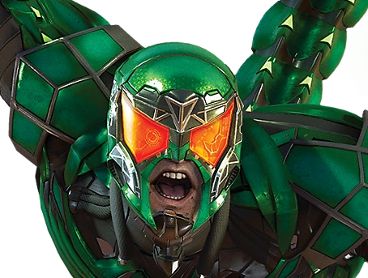
Rhino
Docter Octavius/Doc Ock
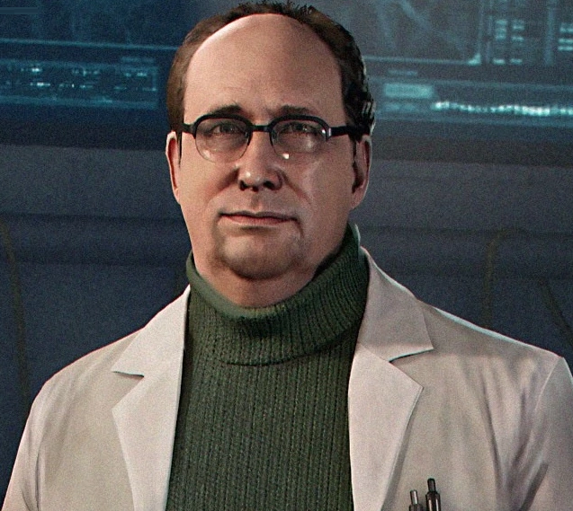 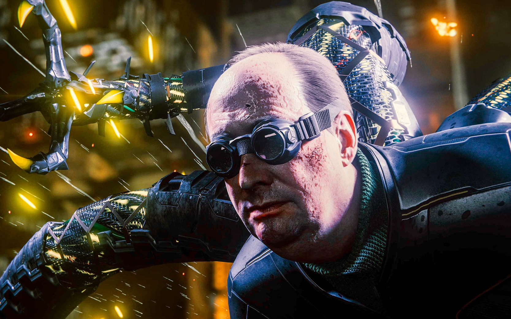
Ok Now let me tell you what the difference between MARVEL Spider-Man and MARVEL Spider-Man Remastered.
They swiched peters face.
Also the graphics better because it's well... Remastered.
And it's remastered because it was originaly on ps4 but than they upgraded the graphics and made a ps5 vergion
 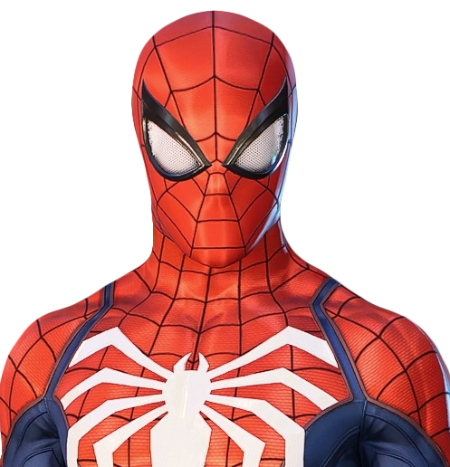
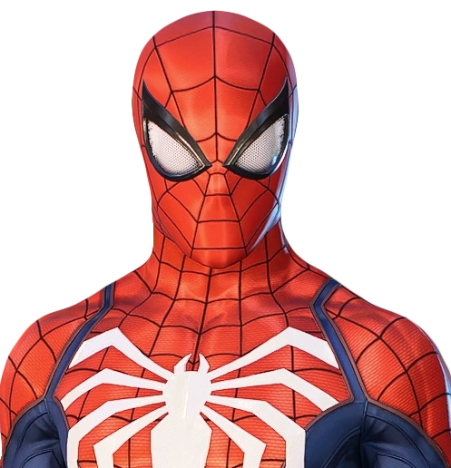